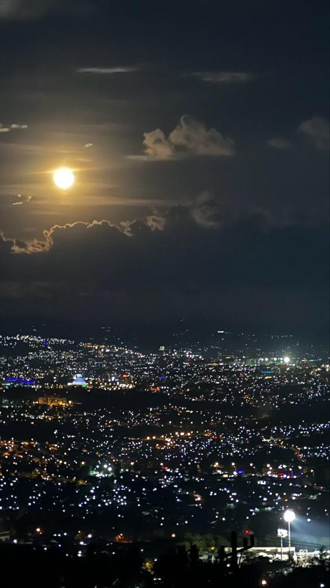
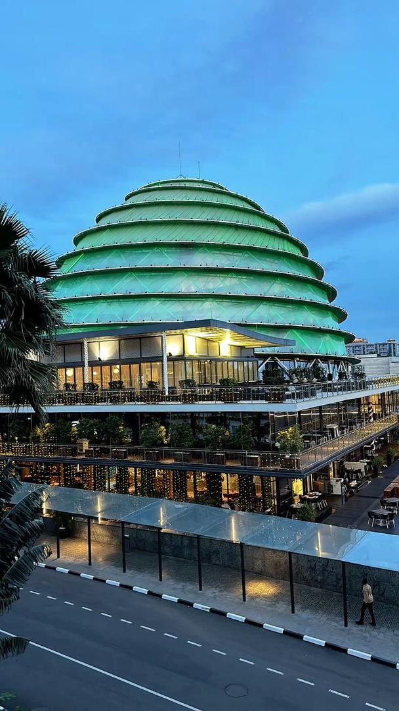

Explore the heart of Kigali — a clean, safe and beautiful city!
Kigali, the capital of Rwanda, is a rapidly growing, safe, and clean city, often recognized as an economic hub. Located in the center of the country, it is known for its "thousand hills" landscape. English is widely used, with 41% of the population literate in it as of 2022.


Listen to the beautiful traditional Sound: